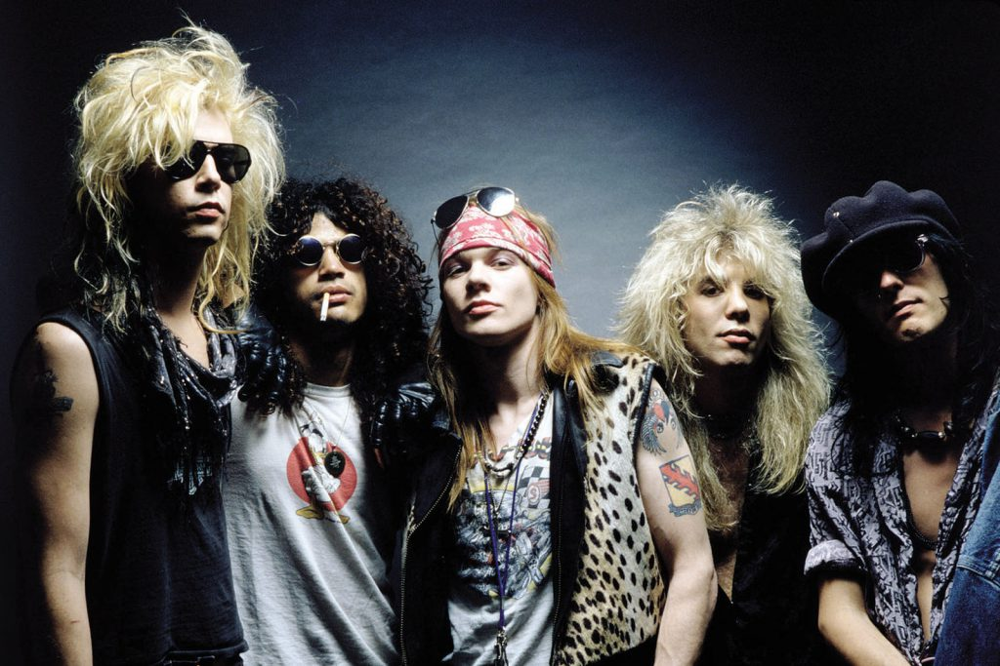

Guns N' Roses (por vezes abreviado como G N' R ou GnR) é uma banda norte-americana de hard rock formada em Los Angeles, Califórnia, em 1985. A banda lançou, até o momento, seis álbuns de estúdio, três EPs e um álbum ao vivo.
A banda vendeu mais de 100 milhões de cópias em todo o mundo, sendo cerca de 43 milhões somente nos Estados Unidos. O seu álbum de estreia lançado em 1987, Appetite for Destruction, vendeu cerca de 33 milhões de cópias no mundo todo, sendo certificado 18 vezes platina pela RIAA (Associação da Indústria de Gravação da América), se tornando o álbum de estreia mais vendido da história da música. A formação atual inclui o vocalista e pianista Axl Rose, os guitarristas Slash e Richard Fortus, o baixista Duff McKagan, o baterista Frank Ferrer e os teclistas Dizzy Reed e Melissa Reese.
Inspirado em sua relação complicada e abusiva com a modelo Erin Everly e no conto de Del James, Without You, ele transformou suas dores em arte e compôs um trilogia de músicas que contempla November Rain, Don’t Cry e Estranged.